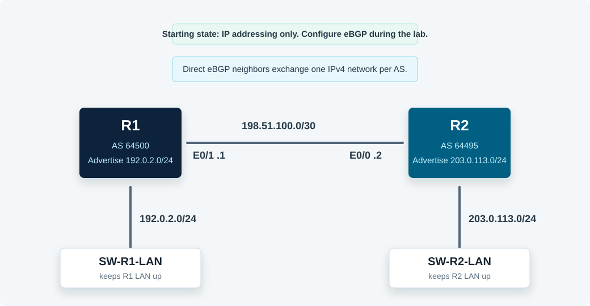

Overview
This lab configures a basic IPv4 eBGP relationship between directly connected routers. R1 belongs to AS 64500, R2 belongs to AS 64495, and each router advertises one connected internal network to the other autonomous system.
All commands in this guide use the CML Ethernet interface names shown in the topology.
Topology
R1 and R2 are directly connected on 198.51.100.0/30. The small IOL-L2 switches keep each router's internal /24 network active so the BGP network statements have exact routes to advertise.

Task 1: Verify the Starting State
Confirm the interface state and direct reachability before configuring BGP. BGP neighbor formation depends on TCP reachability to the configured neighbor address.
! R1
show ip interface brief
show ip route connected
ping 198.51.100.2
! R2
show ip interface brief
show ip route connected
ping 198.51.100.1Task 2: Configure R1's BGP Process and Neighbor
Start BGP on R1 in AS 64500 and define R2 as a directly connected eBGP neighbor in AS 64495.
! R1
conf t
router bgp 64500
bgp log-neighbor-changes
neighbor 198.51.100.2 remote-as 64495
end
show bgp ipv4 unicast summaryTask 3: Advertise R1's Internal Network
Advertise the exact connected R1 internal network. BGP network statements require a matching route in the local routing table.
! R1
conf t
router bgp 64500
network 192.0.2.0 mask 255.255.255.0
end
show bgp ipv4 unicast 192.0.2.0Task 4: Configure R2's BGP Process, Neighbor, and Network
Start BGP on R2 in AS 64495, define R1 as the neighbor, and advertise R2's internal network.
! R2
conf t
router bgp 64495
bgp log-neighbor-changes
neighbor 198.51.100.1 remote-as 64500
network 203.0.113.0 mask 255.255.255.0
endTask 5: Verify BGP Tables and Reachability
Verify the BGP neighbor state, BGP table, route installation, AS path, next hop, and end-to-end reachability between advertised networks.
! R1
show bgp ipv4 unicast summary
show bgp ipv4 unicast
show ip route bgp
show ip route 203.0.113.0
ping 203.0.113.1 source 192.0.2.1
! R2
show bgp ipv4 unicast summary
show bgp ipv4 unicast
show ip route bgp
show ip route 192.0.2.0
ping 192.0.2.1 source 203.0.113.1Expected result: R1 learns 203.0.113.0/24 through AS 64495, and R2 learns 192.0.2.0/24 through AS 64500. The local advertised network should show next hop 0.0.0.0 and high local weight on the originating router.